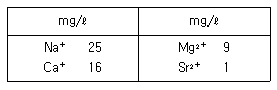
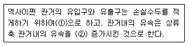
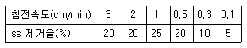
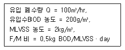
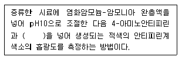
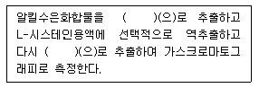
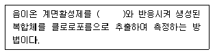
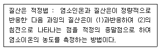
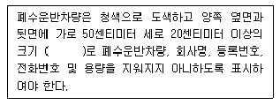

수질환경기사 (2009-05-10 기출문제)
1과목: 수질오염개론
1. 트리할로메탄(THM)에 관한 설명으로 틀린 것은?
- 일정기준 이상의 염소를 주입하면 THM의 농도는 급감한다.
- PH가 증가할수록 THM의 생성량은 증가한다.
- 온도가 증가할수록 THM의 생성량은 증가한다.
- 수돗물에 생성된 트리할로메탄류는 대부분 클로로포름으로 존재한다.
(정답률: 57%)

2. 다음은 어떤 수질의 분석결과이다. (경도 mg/ℓ as CaCO3)는 얼마인가? (단, 원자량: Ca는 40, Mg는 24, Na는 23, Sr는 88)(오류 신고가 접수된 문제입니다. 반드시 정답과 해설을 확인하시기 바랍니다.)

- 약 80
- 약 100
- 약 120
- 약 140
(정답률: 47%)
3. 시료의 BOD5가 400mg/ℓ이고 탈산소계수 값은 0.15/day(밑수는 10)이면 이 시료의 최종 BOD는?
- 496 mg/ℓ
- 487 mg/ℓ
- 472 mg/ℓ
- 465 mg/ℓ
(정답률: 53%)
4. 글리신(CH2(NH2)COOH)의 이론적 COD/TOC의 비는? (단, 글리신의 최종 분해산물은 CO2, HNO3, H2O 이다.)
- 1.42
- 2.42
- 3.67
- 4.67
(정답률: 60%)
5. 수질오염물질 중 중금속에 관한 설명으로 틀린것은?
- 카드뮴: 인체 내에서 투과성이 높고 이동성이 있는 독성 메틸 유도체로 전환된다.
- 비소: 인산염 광물에 존재해서 인화합물 형태로 환경 중에 유입된다.
- 납: 급성 독성은 신장, 생식계통, 간 그리고 뇌와 중추 신경계에 심각한 장애를 유발한다.
- 수은: 수은 중독은 BAL, Ca2 EDTAㄹ로 치료할 수 있다.
(정답률: 32%)
6. 어떤 도시에서 DO 0mg/ℓ, BODu 200mg/ℓ, 유량 1.0m3/sec, 온도 20도의 하수를 유량 6m3/sec인 하천에 방류하고자 한다. 방류지점에서 몇 km 하류에서 가장 DO농도가 작아지겠는가? (단, 하천의 온도는 20도, BODu 1mg/ℓ, DO 9.2mg/ℓ, 유속 3.6km/hr이며 혼합수의 K1=0.1/d, k2=0.2/d, 20도에서 산소포화농도는 9.2mg/ℓ이다. 상용대수기준)
- 약 212
- 약 224
- 약 243
- 약 287
(정답률: 23%)
7. 호소의 영양 상태를 평가하기 위한 Carlson 지수 산정 시 적용되는 인자와 가장 거리가 먼 것은?
- 투명도
- T-N
- T-P
- 클로로필-a
(정답률: 29%)
8. Ca2(OH) 500mg/ℓ 용액의 pH는? (단, Ca(OH)2는 완전 해리된다. Ca 원자량:40)
- 12.1
- 12.5
- 12.8
- 12.9
(정답률: 50%)
9. 어느 하천의 BODu가 8mg/ℓ이고, 탈산소계수(k1)이 0.1/d일 때, 2일 유하한 후 남아 있는 하천의 BOD 농도는? (단, 유하하는 동안 오염물질 유입은 없다고 가정하고, 상용대수기준)
- 3mg/ℓ
- 4mg/ℓ
- 5mg/ℓ
- 6mg/ℓ
(정답률: 7%)
10. 금속산화물 M(OH)2 의 영해도적(Ksp)이 4.0×10-9이면 M(OH)2의 용해도(g/L)는 얼마인가? (단, M은 2가, M(OH)2의 분자량은 80이다.)
- 0.04
- 0.08
- 0.12
- 0.16
(정답률: 36%)
11. 50도에서 순수한 물 1L의 물 농도(mole/ℓ)는? (단, 50도의 물의 밀도는 0.9881kg/ℓ)
- 15.4
- 17.6
- 28.8
- 54.9
(정답률: 57%)
12. 다음 중 지하수의 특성을 설명한 것 중 틀린 것은?
- 광물질이 용해되어 경도와 탁도가 높다.
- 년 중 수온의 변동이 적고 염분함량이 높다.
- 유량변화가 적고 자정작용의 속도가 느리다.
- 수질은 국지적인 환경조건의 영향을 크게 받는다.
(정답률: 48%)
13. 생물체 내에서 일어나는 에너지 대사에 적용되는 열역학법칙 내용과 거리가 먼 것은?
- 에너지의 총량은 일정하다.
- 자연적인 반응은 질서도가 커지는 방향으로 진행된다.
- 엔트로피는 끊임없이 증가하고 있다.
- 정대온도0K(-273.16도)에서는 분자운동이 없으며 엔트로피는 0이다.
(정답률: 56%)
14. 어느 하천수의 단위시간당 산소전달율 KLa를 측정하고자 용존산소 농도를 측정하였더니 8mg/ℓ이었다. 이때 용존산소 농도를 0mg/ℓ으로 만든기 위해 필요한 Na2 SO3의 이론첨가량은? (단, 원자량은 Na:23, S:32)
- 33mg/ℓ
- 43mg/ℓ
- 53mg/ℓ
- 63mg/ℓ
(정답률: 32%)
15. 해수의 화학적 성질에 관한 설명으로 틀린 것은?
- 염분의 적도해역에서 높고 남북양극해역에서 다소 낮다.
- 해수의 성분 농도비는 수온, 염분, 수압의 함수로 수심이 깊을수록 증가한다.
- 해수는 강전해질로서 1L당 35g의 염분을 함유한다.
- 해수 내 전체 질소 중 약 35% 정도는 NH3-N, 유기지로 형태이다.
(정답률: 36%)
16. 다음의 각종 용액 중 몰(mole) 농도가 가장 큰 것은? (단, Na, Cl의 원자량은 각각 23, 35.5)
- 130g 수산화나트륨/4ℓ
- 3.6g 황산/30㎖
- 0.4kg 염화나트륨/10ℓ
- 5.2g 염산/0.1ℓ
(정답률: 18%)
17. 생물학적 질화 중 아질산화에 관한 설명으로 틀린 것은?
- 알칼리도를 생성한다.
- 증식속도는 0.21~108day-1 범위 정도이다.
- 관련 미생물은 독립영양성 세균이다.
- 산소가 필요하다.
(정답률: 32%)
18. 직격 3mm인 모세관의 표면장력이 0.0037kgf/m이라면 물기둥의 상승높이는? (단, 접촉각은 β=5도)
- 0.26cm
- 0.38cm
- 0.49cm
- 0.57cm
(정답률: 42%)
19. 다음의 기체 법칙 중 맞는 것은?
- Boyle의 법칙: 일정한 압력에서 기체의 부피는 절대온도에 정비례 한다.
- Henry의 법칙: 기체가 관련된 화학반응에서는 반응하는 기체와 생성되는 기체의 부피 사이에 정수관계가 있다.
- Graham의 법칙: 기체의 확산속도(조그마한 구멍을 통한 기체의 탈출)는 지체 분자량의 제곱근에 반비례한다.
- Gay-Lussac의 결합 부피 법칙: 혼합 기체내의 각기체의 부분압력은 혼합물 속의 기체의 양에 비례한다.
(정답률: 27%)
20. 어떤 폐수의 시료를 분석한 결과, COD는 850mg/ℓ, SCOD는 380mg/ℓ, BOD5는 47mg/ℓ, SBOD5는 215mg/ℓ 이었다. NBDICOD 농도는? (단, k=1.47을 적용할 것)(오류 신고가 접수된 문제입니다. 반드시 정답과 해설을 확인하시기 바랍니다.)
- 215mg/L
- 159mg/L
- 95mg/L
- 65mg/L
(정답률: 23%)
2과목: 상하수도계획
21. 다음은 하수도 시설 중 역사이펀에 관한 설명이다. ( )안에 맞는 내용은?

- ①말굽모양, ②5~15%
- ①말굽모양, ②10~20%
- ①종모양, ②10~20%
- ①종모양, ②20~30%
(정답률: 24%)
22. 계획오수량에 관한 설명으로 틀린 것은?
- 지하수량은 1인1일 최대 오수량의 10~20%로 한다.
- 계획시간최대오수량은 계획1일 최대 오수량의 1시간당 수량의 1.3~1.8배를 표준으로 한다.
- 합류식에서 우천시 계획 오수량은 원칙적으로 계획 시간 최대 우수량의 3배 이상으로 한다.
- 계획2일 평균오수량은 계획1일 최대 오수량의 60~70%를 표준으로 한다.
(정답률: 50%)
23. 하수관을 매설하려고 한다. 매설지저의 표토는 젖은 진흙으로서 흙의 단위 중량은 1.85kN/m3이고, 흙의 종류e와 관의 깊이에 따라 결정되는 계수 C1은 1.86이다. 이때 매설관이 받는 하중은? (단, Marston의 방법 작용, 관의 상부 90도 부분에서의 관매설을 위하여 굴토한 도랑 폭은 1.2m이다.)
- 약 5kN/m
- 약 15kN/m
- 약 25kN/m
- 약 35kN/m
(정답률: 36%)
24. 상수처리를 위한 정수시설 중 착수정에 관한 내용으로 틀린 것은?
- 수위가 고수위 이상으로 올라가지 않도록 월류관이나 얼류위어를 설치한다.
- 착수정의 고수위와 주변벽체의 상단간에는 60cm 이상의 여유를 두어야 한다.
- 착수정의 용량은 체류시간을 30분 이상으로 한다.
- 필요에 따라 분말활성탄을 주입할 수 있는 장치를 설치하는 것이 바람직하다.
(정답률: 34%)
25. 정수처리를 위한 침전지 중 고속응집침전지를 선택할 때 고려하여야 하는 조건으로 틀린 것은?
- 원수 탁도는 1.0 NTU이상이어야 한다.
- 최고 탁도는 1000NTU이하인 것이 바람직하다.
- 처리수량의 변동이 적어야 한다.
- 탁도와 수온의 변동이 적어야 한다.
(정답률: 47%)
26. 길이 3m × 폭2.5m×깊이 2.8m인 장방형 탱크 속으로 물이 연속적으로 균일하게 1.5m3/분으로 흘러들어온다. 탱크의 수심이 2.5m가 되었을 때 2m3/분의 양수능력이 있는 펌프르 사용하여 탱크의 물을 비우는데 소요되는 시간은?
- 32분 30초
- 37분 30초
- 43분 15초
- 49분 15초
(정답률: 37%)
27. 정수시설인 침사지에 대한 설명 중 틀린 것은?
- 표면부하율은 200~500mm/min을 표준으로 한다.
- 지내 평균유속은 2~7cm/s 를 표준으로 한다.
- 지의 길이는 폭의 5~10배를 표준으로 한다.
- 지의 상단 높이는 고수위보다 0.6~1m의 여유고를 둔다.
(정답률: 65%)
28. 비교회전도(Ns)에 대한 다음 설명 중 적절하지 않은 것은?
- 펌프는 Ns의 값에 따라 그 형식이 변한다.
- Ns가 같으면 펌프의 크기에 관계없이 같은 형식의 펌프로 하고 특성도 대체로 같게 된다.
- Ns값이 클수록 적은 수량과 고양정 펌프를 의미한다.
- Ns범위는 터빈펌프보다 축류펌프가 크다.
(정답률: 48%)
29. 하천수를 수원으로 하는 경우에 사용하는 취수 시설인 ‘취수보’에 관한 설명으로 틀린 것은?
- 일반적으로 대하천에 적당하다.
- 안정된 취수가 가능하다.
- 침사 효과가 크다.
- 관거는 계획 하상 이하로 매설한다.
(정답률: 12%)
30. 단면형태가 말굽형인 하수관거의 장, 단점이 아닌 것은?
- 대구경 관거에 유리하며 경제적이다.
- 단면형사이 복잡하기 때문에 시공성이 열악하다.
- 수리학적으로 불리하다.
- 현장타설의 경우는 공사기간이 길어진다.
(정답률: 9%)
31. 직경 1m인 원형콘크리트관에 하수가 흐르고 있다. 동수구배(I)가 0.01이고, 수심이 0.5m일때 유속은? (단, 조도계수(n):0.013, Manning 공식적용, 만관기준)
- 2.1m/s
- 2.7m/s
- 3.1m/s
- 3.7m/s
(정답률: 43%)
32. 수도관으로 사용되는 관종 중 스테인리스 강관에 관한 내용으로 틀린 것은?
- 이종 금속과의 절연처리가 필요 없다.
- 라이닝이나 도장을 필요로 하지 않는다.
- 용접 접속에 시간이 걸린다.
- 강인성이 뛰어나고 충격에 강하다.
(정답률: 38%)
33. 표준활성슬러지법에 관한 내용으로 틀린 것은?
- 수리학적 체류시간은 6~8시간을 표준으로 한다.
- 반응조내 MLSS 농도는 1500~2500mg/L 를 표준으로 한다.
- 포기조의 유효수심은 심층식의 경우 10m를 표준으로 한다.
- 포기조 여유고는 표준식은 30~60cm 정도를 표준으로 한다.
(정답률: 36%)
34. 지하수 취수시 적용된 ‘적정양수량’의 정의로 맞는 것은?
- 최대양수량의 80% 이하의 양수량
- 한계양수량의 80% 이하의 양수량
- 최대양수량의 70% 이하의 양수량
- 한계양수량의 70% 이하의 양수량
(정답률: 50%)
35. I=3,6600mm/t+15hr, 면적 3.0㎢, 유입시간 6분, 유출계수 C=0.65, 관내 유속이 1m/s인 경우 관길이 600m인 하수관에서 흘러나오는 우수량은?
- 31m3/sec
- 42m3/sec
- 52m3/sec
- 64m3/sec
(정답률: 45%)
36. 최근 정수장에서 응집제로서 많이 사용되고 있는 폴리염화알루미늄(PACℓ)에 대한 설명으로 맞는 것은?
- 일반적으로 황산알루미늄보다 응집성이 우수하고 적정주입 pH의 범위가 넓으며 알칼리도의 저하가 적다.
- 일반적으로 황산알루미늄보다 응집성은 약하나 적정주입 pH의 범위가 좁고 알칼리도의 저하가 적다.
- 일반적으로 황산알루미늄보다 응집성이 우수하나 적정주입 pH의 범위가 좁고 알칼리도의 저하가 크다.
- 일반적으로 황산알루미늄보다 응집성이 약하나 적정주입 pH의 범위가 넓고 알칼리도의 저하가 크다.
(정답률: 53%)
37. 하수관거인 오수관서의 유속 기준으로 맞는 것은?
- 계획1일 최대오수량에 대하여 유속을 최소 0.8m/s, 최대 3.0m/s로 한다.
- 계획1일 최대오수량에 대하여 유속을 최소 0.6m/s, 최대 3.0m/s로 한다.
- 계획시간최대오수량에 대하여 유속을 최소 0.8m/s, 최대 3.0m/s로 한다.
- 계획시간최대오수량에 대하여 유속을 최소 0.6m/s, 최대 3.0m/s로 한다.
(정답률: 14%)
38. 계획오수량을 정할 때 고려하여야 하는 내용으로 틀린 것은?
- 최대계획우수유출량의 산정은 합리식에 의하는 것으로 한다.
- 확률년수는 원칙적으로 5~10년으로 한다.
- 유하시간은 유입시간과 유달시간의 합으로 한다.
- 유출계수는 토지이용도별 기초유출계수로부터 총괄유출계수를 구하는 것을 원칙으로 한다.
(정답률: 39%)
39. 하수처리시설인 일차침전지의 표면부하율 기준으로 맞는 것은?
- 계획1일 최대오수량에 대하여 분류식의 경우 25~50m3/m2.d 로 한다.
- 계획1일 최대오수량에 대하여 분류식의 경우 15~25m3/m2.d 로 한다.
- 계획1일 최대오수량에 대하여 합류식의 경우 15~25m3/m2.d 로 한다.
- 계획1일 최대오수량에 대하여 합류식의 경우 25~50m3/m2.d 로 한다.
(정답률: 9%)
40. 상수의 급속여과지의 설계기준에 대한 설명 중 틀린 것은?
- 여과속도는 150-350m/일을 표준으로 한다.
- 모래층의 두께는 여과사의 유효경이 0.45-0.7mm의 범위인 경우에는 60~70cm을 표준으로 한다.
- 여과면적은 계획 정수량을 여과속도로 나누어 구한다.
- 1지의 여과면적은 150m2 이하로 한다.
(정답률: 42%)
3과목: 수질오염방지기술
41. 표면 부하율이 25.8m3/m2.d 인 한 침첨지로 유입되는 부유물(ss)의 침전속도 분포가 다음 표와 같다면 이 침전지에서 기대되는 전체 부유물 제거율은?

- 약 40%
- 약 50%
- 약 60%
- 약 70%
(정답률: 38%)
42. 활성슬러지 혼합액의 고형물을 0.3%에서 3% 까지 농축하고자 할 때 가압순환 흐름이 있는 경우의 부상농축기를 설계하고자 한다. 다음의 조건하에서 소요순환환유량은? (단, 최적공기/고형물비(A/S)=0.06, 온도=20도, 공기용해도=18.7㎖, 압력=3.7atm, 용존공기비율=0.5, 슬러지유량=400m3/day)
- 약 2500m3/day
- 약 3000m3/day
- 약 3500m3/day
- 약 4000m3/day
(정답률: 24%)
43. 폐활설슬러지를 부상 농축조를 이용하여 농축시키고자 한다. 처리 슬러지의 부피는 500m3/day이고, 이슬러지의 부유물질 농도는 하루 24시간 가동되는 부상 농축조로 처리하고자 할 때 필요한 수면적은? (단, 슬러지 비중은 1.0으로 가정함)
- 8.3m3
- 16.4m3
- 33.3m3
- 66.6m3
(정답률: 25%)
44. 역삼투 장치로 하루에 10,000L의 3차 처리된 유출수를 탈염시키고자 한다. 25도에서의 물질 전달계수는 0.2068L/{day-m2)(kpa)}, 유입수와 유출계수의 압력차는 2400kpa, 유입수와 유출수의 삼투압차는 310kpa, 최저 운전온도는 10도이다. 요구되는 막면적은? (단. A10도 = 1.2 A25도)
- 9m2
- 16m2
- 28m2
- 34m2
(정답률: 59%)
45. 물리 화학적 방법을 이용하여 질소를 효과적으로 제거하는 공법과 가장 거리가 먼 것은?
- 금속염(Al, Fe)첨가법
- 탈기법(Air Stripping)
- 이온교환법
- 파괴점 염소주입법
(정답률: 48%)
46. 하수소독시 사용되는 이산화염소(ClO2)와 염소(Cl2)에 관한 내용으로 틀린 것은?
- 바이러스 사멸 ClO2-좋음, C2-나쁨
- 유해부산물 ClO2-없음, Cl2-있음
- 잔류성 ClO2-길다, Cl2-길다
- pH영향 ClO2-있음, Cl2-있음
(정답률: 32%)
47. 인구 1000명의 마을에 하수로의 SS 방출률은 80g/인.일이다. 하수내의 SS 중에서 80%가 침전하여 96%의 함수율을 가지는 슬러지로서 제거된다면 슬러지의 양은?
- 1.6 m3/day
- 2.4 m3/day
- 3.1 m3/day
- 4.2 m3/day
(정답률: 16%)
48. 다음 각 수질 인자가 금속 하수도관의부식에 미치는 영향중 잘못 기술된 것은?
- 고농도의 염화물이나 황산염은 철, 구리 남의 부식을 증가시킨다.
- 용존산소는 여러 부식 반응 속도를 증가시킨다.
- 잔류염소는 용존산소와 반응하여 금속 부식을 억제 시킨다.
- 암모니아는 착화물의 통하여 구리나 납의 용해도를 증가시킬 수 있다.
(정답률: 48%)
49. 3%(v/v%)고형물 함량의 슬러지 15m3을 10%(v/v%) 고형물 함량의 슬러지케이크로 탈수하면 케이크의 용적은? (단, 슬러지 비중은 1.0)
- 1.5m3
- 2.2m3
- 3.5m3
- 4.5m3
(정답률: 29%)
50. 다음 조건하에서의 폭기조 용적은?

- 320m3
- 480m3
- 530m3
- 620m3
(정답률: 53%)
51. 양이온 교환수지를 이용하여 암모늄이온 12mg/ℓ를 포함하고 있는 물 7000m3를 처리하고자 한다. 이 교환수지의 교환능력이 100kg CaCO3/m3 이라면 필요한 이론적 수지의 부피는?
- 1.12m3
- 1.64m3
- 2.33m3
- 2.78m3
(정답률: 37%)
52. 인 제거를 위한 Sidestream 공정에 관한 설명으로 틀린 것은?
- 인을 화학적 처리 없이 과잉 흡수된 잉여 슬러지 배출러 제거한다.
- 석회 주입량은 알루미늄이나 금속염과 달리 알칼리도에 의하여 결정된다.
- 비교적 유입수의 유기물 부하에 영향을 받지 않는다.
- 대표적인 인 제거공법으로는 phostrip 공정이 있다.
(정답률: 13%)
53. 설계부하가 37.3m3/m2.day 이고, 처리할 폐수 유향 7571m3/day 인 경우에 원형 침전조 직경은?
- 12m
- 14m
- 16m
- 18m
(정답률: 25%)
54. 지름이 균등하게 0.1mm일 때, 비중이 0.4인 기름방울은 비중이 0.8인 기름방울보다 수중에서의 부상속도가 얼마나 더 큰가? (단, 물의 비중은 1.0, 기타 조건은 같다고 한다.)
- 6배
- 5배
- 4배
- 3배
(정답률: 44%)
55. 침전지에서 미립자의 침강 속도가 증대되는 원인이 아닌 것은?
- 입자 비중의 증가
- 액체 점성계수 증가
- 수온의 증가
- 입자 직경의 증가
(정답률: 44%)
56. 생물학적 처리공정에서 질산화 반응은 다음의 총괄 반응식으로 나타낼 수 있다. [NH4++202----->NO3-+2H+H2O] NH4+-N 1mg/l 가 질산화 되는데 요구되는 산소(O2)의 양(mg/l)은?
- 2.82
- 3.56
- 4.57
- 5.84
(정답률: 39%)
57. 미처리 폐수에서 발생하는 냄새의 화학식 및 특징을 연결한 것이다. 이중 잘못 된 것은?
- Skatole-(C6H5)S-썩은 달걀냄새
- Mercaptans-CH3(CH2)3SH-스컹크냄새
- Amines-CH3NH2-생선냄새
- Diamines-NH2(CH2)5NH2-부패된 고기냄새
(정답률: 20%)
58. 슬러지계량법과 그 특징으로 틀린 것은?
- 고분자 응집제 첨가: 슬러지 응결을 촉진한다.
- 무기약품 첨가: 무기약품은 슬러지의 pH를 변화시켜 무기질 비율을 증가시키고 안정화를 도모한다.
- 세정: 혐기성 소화슬러지의 알칼리도를 감소시켜 산성 슴속염의 주입량을 감소시킨다.
- 열처리: 슬러지의 함수율을 감소시키고 응결핵을 적용시켜 탈수를 개선한다.
(정답률: 24%)
59. 어느 1차 반응에서 반응개시 농도가 200mg/ℓ 이고, 반응 2시간 후의 농도는 40mg/ℓ 였다. 1시간 후의 반응물질의 농도(mg/ℓ)는? (단, 자연대수 기준)
- 80
- 85
- 90
- 95
(정답률: 44%)
60. 슬러지일령(Sludge age)이란, 슬러지 즉, 고형물인 MLSS가 처리공정에서 머무르는 시간으로서 고형물 체류시간(SRT)을 말한다. 다음과 같은 조건으로 운전되고 있는 환전혼합 활성 슬러지공법에서의 슬러지 일령은? (단, 포기조 유입 폐수량 1000m3/일, 포기조 용량 250m3 포기조 유입 BOD 250mg/l, 포기조MLSS 농도 3000mg/l, 잉여슬러지량 10m3/일, 잉여슬러지 농도 8000mg/l, 방류수 SS 농도 10mg/l 이다.)
- 약 8.3 일
- 약 10.5 일
- 약 12.3 일
- 약 14.5 일
(정답률: 24%)
4과목: 수질오염공정시험기준
61. 수질오염공정시험기준상 클로로필a 측정을 위한 기구 및 기기와 가장 거리가 먼 것은?
- 조직마쇄기
- 광정광도계
- 마개있는 원심 분리관
- 고압증기멸균기
(정답률: 30%)
62. 흡광도 측정에서 투과율이 30%일 때 흡광도는?
- 0.37
- 0.42
- 0.52
- 0.63
(정답률: 50%)
63. 중크롬산칼륨에 의한 화학적 산소요구량(cod) 측정법에 관한 설명 중 틀린 것은?
- 시료량은 2시간 동안 끓인 다음 최초에 넣은 0.025N-중크롬산칼륨 용액의 약 1/2이 남도록 취한다.
- 시료에 현탁물질이 포함되어있는 경우에는 잘 흔들어 섞어 균일하게 한 다음 신속하게 분취한다.
- 0.025N 황산제일철암모늄 액을 사용하여 적정한다.
- 적정시 액의 색이 적자색에서 황갈색으로 변할 때 까지 적정한다.
(정답률: 12%)
64. 유기물 함량이 비교적 높지 않고 금속의 수산화물, 산화물, 인산염 및 황화물을 함유하는 시료의 전처리 방법은?
- 질산에 의한 분해
- 질산-염산에 의한 분해
- 질산-황산에 의한 분해
- 질산-과염소산에 의한 분해
(정답률: 57%)
65. 0.025N-KMnO4 500ml를 조게하려면 KMnO4 몇 g을 취해야 하는가? (단, 원자량 : K=39, Mn=55)
- 0.2
- 0.4
- 0.6
- 0.8
(정답률: 32%)
66. 다음은 4-아미노 안티피린법에 위한 페놀 정량 측정원리에 관한 내용이다. ( )안에 맞는 내용은?

- 과망간산칼륨
- 페리시안칼륨
- 염화제일주석산 칼륨
- 중그롬산 칼륨
(정답률: 19%)
67. 알킬수은을 가스크로마토그래피로 측정하는 원리이다. ( )안에 맞는 내용은?

- 아세톤
- 벤젠
- 메탄올
- 사염화탄소
(정답률: 61%)
68. 총 유기탄소 측정시 적용되는 용어정의로 틀린 것은?
- 비정화성 유기탄소 : 총 단소 중 pH 6.5~8.3 범위에서 포기에 위해 정화 되지 않는 탄소를 말한다.
- 부유성유기탄소 : 총 유기탄소중 공ㄲ 0.45um의 막 여과지를 통과하지 못한 유기탄소를 말한다.
- 무기성탄소 : 수중에 탄산염, 중탄산염, 용존 이산화탄소 등 무기적으로 결합된 탄소의 합을 말한다.
- 총 탄소 : 수중에서 존재하는 유기적 EH는 무기적으로 결합된 탄소의 합을 말한다.
(정답률: 15%)
69. 수산화나트륨(NaOH) 10g을 물에 녹여서 500ml로 하였을 경우 몇 N 용액인가?
- 1.0N
- 0.25N
- 0.5N
- 0.75N
(정답률: 39%)
70. 흡광광도법을 이용한 음이온 계면활성제 측정에 관한 내용이다. ( )안에 맞는 내용은?

- 메틸레드
- 메틸렌 블루
- 메틸 오렌지
- 메틸렌 레드
(정답률: 50%)
71. 다음 설명 중 옳은 것은?
- “항량으로 될 때가지 건조한다.”라 함은 같은 조건에서 1시간 더 건조할 때 전후 무게차가 g당 0.1mg 이하일 때를 말한다.
- “감압 또는 진공” 이라 함은 따로 규정이 없는 한 15mmH2 0이하를 말한다.
- “수욕상 EH는 물중탕 중에서 가열한다” 라 함은 따로 규정이 없는 한 수온 100도에서 가열함을 뜻하고 약 100도의 증기욕을 쓸 수 있다.
- “방울수” 라 함을 0도에서 정제수 20방울을 적하할 때 그 부피가 약 1㎖ 되는 것을 뜻한다.
(정답률: 50%)
72. 다음 중 비소의 시험 방법으로 맞는 것은?
- 디에틸디티오카르바민산은법
- 디메틸글리옥심법
- 페난트로린법
- 디페닐카르바지드법
(정답률: 0%)
73. 흡광공도법으로 시안 측정시 측정대상 시료에 황화합물이 함유된 경우, 제거방법으로 맞는 것은?
- L-아스코르빈산용액을 넣어 제거한다.
- 아비산나트륨용액을 넣어 제거한다.
- 초산아연용액을 넣어 제거한다.
- 과황산칼륨용액을 넣어 제거한다.
(정답률: 6%)
74. 다음 중 시험방법과 분석항목이 틀리게 짝지어진 것은?
- 인도페놀법-암모니아성 질소
- 디아조화법-아질산성 질소
- 데발다 환원 증류법-용존 총질소
- 카드뮴 환원법-총질소
(정답률: 29%)
75. 다음은 염소이온의 특정원리를 설명한 것이다. ( )안에 맞는 내용은?

- 1-크롬산, 2-크롬산은
- 1-주석산, 2-주석산은
- 1-차아염소산염, 2-차아염소산염은
- 1-염화제일철, 2-염화제일철은
(정답률: 43%)
76. 흡광광도법을 적용한 니켈 측정에 관한 설명으로 맞는 것은?
- 황갈색 니켈착염의 흡광도를 측정한다.
- 적갈색 니켈착염의 흡광도를 측정한다.
- 황록색 니켈착염의 흡광도를 측정한다.
- 적자색 니켈착염의 흡광도를 측정한다.
(정답률: 23%)
77. 다음은 유도결합플라스마 발광광도법에서 장차의 설정조건에 관한 설명이다. 틀린 것은?
- 고주파 출력 : 수용액 시료의 경우 0.8~1.4Kw, 유기용매 시료의 경우 1.5~2.5KW로 설정한다.
- 가스의 유량 : 일반적으로 냉각가스 0.2
- 플라스마 발광부 관측 높이 : 유도코일 상단으로부터 15~18mm의 범위에서 측정하는 것이 보통이나 알칼리 원소의 경우 20~25mm의 범위에서 측정한다.
- 분석선의 설정 : 일반적으로 가장 감도가 높은 파장을 설정한다.
(정답률: 20%)
78. 다음 중 시료 최대보존기간이 가장 긴 항목은? (단, 적절한 보존방법을 적용한 경우임)
- 시안
- 인산인염
- 질산성질소
- 암모니아성 질소
(정답률: 35%)
79. 전기전도도 측정에 관한 설명으로 틀린 것은?
- 전기전도도는 용액의 전류를 운반할 수 있는 정도를 말한다.
- 전기전도도는 온도차에 의한 영향이 적어 폭 넓게 적용한다.
- 용액에 담겨 있는 2개의 전극에 일정한 전압을 가해주면 가한 전압이 전류를 흐르게 하며, 이 때 흐르는 전류의 크기는 용액의 전도도에 의존한다는 사실을 이용한다.
- 전기전도도는 용액 중의 이온세기를 신속하게 평가할 수 있는 항목으로 국제적으로S(Siemens)단위가 통용되고 있다.
(정답률: 42%)
80. 다음은 식물성플랑크톤(조류)의 중배율 방법에 의한 정량 분석시 주의사항에 관한 내용이다. 틀린 것은?
- 세즈윅-라프터챔버는 미소 플랑크톤의 검경에 적절하다.
- 집락을 형성하는 조류들은 필요에 따라 단일 세표로 분리한 후 고르게 현탁하여 시료로 한다.
- 시료를 챔버에 채울 때 피펫은 입구에 얿은 것을 사용 하는 것이 좋다.
- 혈구계수기의 경우, 가장 큰 격자 크기 1mm×1mm를 이용한다.
(정답률: 25%)
5과목: 수질환경관계법규
81. 다음 중 초과 부과금 산정 시 적용되는 수질오염 물질 1킬로그램당 부과금액이 가장 낮은 것은?
- 크롬 및 그 화합물
- 유기인 화합물
- 시안화합물
- 비소 및 그 화합물
(정답률: 27%)
82. 특례지역에 위치한 폐수시설의 부유물질량 배출 허용 기준은? (단, 1일 폐수배출량 1000톤)
- 30mg/ℓ
- 40mg/ℓ
- 50mg/ℓ
- 60mg/ℓ
(정답률: 44%)
83. 다음의 위임업무보고사항 중 보고 횟수가 다른 것은?
- 기타수질오염원 현황
- 과징금 부과 실적
- 비점오염원 설치신고 및 방지시설 설치현황
- 과징금 징수실적 및 체납처분 현황
(정답률: 57%)
84. 사업장에서 1일 폐수배출량이 150m3 발생하고 있다. 이사업장의 규모별 구분으로 맞는 것은?
- 2종사업장
- 3종사업장
- 4종사업장
- 5종사업장
(정답률: 46%)
85. 수질 및 수생태계 환경기준 중 해역(생활환경) Ⅱ 등급의 기준으로 맞는 것은?
- 생물화학적 산소요구량(BOD) : 6mg/ℓ 이하
- 부유물질량 (SS) : 25mg/ℓ 이하
- 용존산소량 (DO) : 5mg/ℓ 이하
- 대장균 군수(MPN/㎖) : 500 이하
(정답률: 8%)
86. 수질 및 수생태계 환경기준 중 하천의 생활환경 기준(등급: 보통 Ⅲ)의 기준치로 틀린 것은?
- 용존산소량(mg/ℓ) : 5이상
- 생물화학적산소요구량(mg/ℓ) : 5이하
- 부유물질량(mg/ℓ) : 25이하
- 총대장균군수(군수/100㎖) : 100이하
(정답률: 25%)
87. 다음의 수질오염방지시설 중 물리적 처리시설에 해당되지 않는 것은?
- 유수분리시설
- 혼합시설
- 침전물 개량시설
- 응집시설
(정답률: 34%)
88. 대권역 수질 및 수생태계 보전계획을 수립할 경우 포함되어야 할 사항 중 틀린 것은?
- 점오염원, 비점오염원 및 기타수질오염원에 의한 수질 오염물질 발생량
- 상수원 및 물 이용현황
- 점오염웜, 비점오염원 및 기타 수질 오염원 분포현황
- 점오염원 확대 계획 및 저감시설 현황
(정답률: 37%)
89. 낚시제한구역에서의 낚시방법 제한사항에 관한 기준으로 틀린 것은?
- 1명당 4대 이상의 낚시대를 사용하는 행위
- 낚시 바늘에 끼워서 사용하지 아니하고 떡밥 등을 3회 이상 던지는 행위
- 1개의 낚시대에 5개 이상의 낚시바늘을 떡밥과 뭉쳐서 미끼로 던지는 행위
- 어선을 이용한 낚시 행위 등 [낚시어선업법]에 다른 낚시어선업을 영위하는 행위
(정답률: 42%)
90. 다음 중 특정수질유해물질이 아닌 것은?
- 1,1-티클로로에틸렌
- 브로모포름
- 아크릴로니트릴
- 2,4-다이옥신
(정답률: 50%)
91. 일일기준초과 배출량 산정시 적용되는 일일유량의 산성 방법은 [측정유량×일일조업시간]이다. 측정유량의 단위는?
- 초당 리터
- 분당 리터
- 시간당 리터
- 일당 리터
(정답률: 74%)
92. 관계 공무원의 출입, 검사를 거부, 방해 또는 기피한 폐수 무장류배출시설을 설치, 운영하는 사업자에 대한 벌칙기준으로 맞는 것은?
- 200백만원 이하의 벌금에 처한다.
- 300백만원 이하의 벌금에 처한다.
- 500백만원 이하의 벌금에 처한다.
- 1년 이하의 징역 또는 1천만원 이하의 벌금에 처한다.
(정답률: 58%)
93. ‘기타 수질오염원’ 시설인 골프장의 규모기준은? (단, 골프장 : 체육시설의 설치, 이용에 관한 법률 시행령에 따른 골프장)
- 면적 10만 m2 이상이거나 3홀 이상
- 면적 10만 m2 이상이거나 9홀 이상
- 면적 3만 m2 이상이거나 3홀 이상
- 면적 3만 m2 이상이거나 9홀 이상
(정답률: 67%)
94. 수질 및 수생태계 보전에 관한 법률에 적용하는 용어의 정의로 틀린 것은?
- ‘비점오염원’이라 함은 도시, 도로, 농지, 산지, 공사장 등으로서 불특정 장소에서 불특정하게 수질오염물질을 배출하는 배출원을 말한다.
- ‘폐수’라 함은 물에 액체성 또는 고체성의 수질오염물질이 혼입되어 그대로 사용할 수 없는 물을 말한다.
- ‘불투수층’이라 함은 빗물 또는 눈 녹은 물들이 지하로 스며들 수 없게 하는 아스팔트, 콘크리트 등으로 포장된 도로, 주차장, 보도등을 말한다.
- ‘강우 유출수’라 함은 전오염원의 수질오염 물질이 섞여 유출되는 빗물 또는 눈 녹은 물 등을 말한다.
(정답률: 39%)
95. 담은은 폐수재이용업의 시설 및 장비기준 중 운반장비에 관한 내용이다. ( )안에 맞는 것은?

- 노란색 바탕에 검은색 글씨
- 검은색 바탕에 노란색 글씨
- 주황색 바탕에 노란색 글씨
- 노란색 바탕에 주황색 글씨
(정답률: 54%)
96. 비점오염원의 변경신고를 하여야 하는 경우(기준)로 틀린 것은?
- 상호, 대표자, 사업명 또는 업종의 변경
- 비점오염원 또는 비점오염원저감시설의 전부 또는 일부를 폐쇄하는 경우
- 총 사업면적, 개발면적 또는 사업장 부지 면적이 처음 신고면적의 100분의 15이상 증가하는 경우
- 비점오염원의 종류, 위치, 용량이 변경되는 경우
(정답률: 24%)
97. 조류경보 단계의 종류와 경보단계별 발령, 해제 기준으로 틀린 것은?
- 조류주의보-2회 연속채취시 클로로필-a농도 15mg/m3이상이고 남조류 세포 수가 500세포/㎖ 이상인 경우
- 조류주의보-2회 연속채취시 클로로필-a농도 25mg/m3이상이고 남조류 세포 수가 5000세포/㎖ 이상인 경우
- 조류주의보-2회 연속채취시 클로로필-a농도 100mg/m3이상이고 남조류 세포 수가 100000세포/㎖ 이상인 경우
- 조류주의보-2회 연속채취시 클로로필-a농도 15mg/m3미만 이거나 남조류 세포 수가 5000세포/㎖ 미만인 경우
(정답률: 20%)
98. 환경부장관이 설치, 운영하는 측정망의 종류와 가장 거리가 먼 것은?
- 공공수역 유해물질 측정망
- 퇴적물 측정망
- 점오염원 배출 오염물질 측정망
- 생물 측정망
(정답률: 50%)
99. 폐수종말저치시설의 방류수 수질 기준 중 틀린 것은? (단, 2008.01.01, 부터 2010.12.31 까지의 기준이며 ( )안의 기준은 농공잔지의 경우를 나타냄)
- BOD (mg/ℓ)-20(30)이하
- COD (mg/ℓ)-40(50)이하
- T-N (mg/ℓ)-40(60)이하
- T-P (mg/ℓ)-4(8)이하
(정답률: 0%)
100. 조류경보단계 중 조류대발생경보시 유역지방환경청장의 조치사항과 가장 거리가 먼 것은?
- 발령기관에 대한 시험분석 결과의 신속한 통보
- 수상스키, 수영, 낚시, 취사 등의 활동 금지
- 주변 오염원에 대한 지속적인 단속 강화
- 어패류 어획, 식용 및 가축 방목의 금지
(정답률: 34%)
일정기준 이상의 염소를 주입하면 THM의 농도가 급감하는 이유는 염소가 클로로포름과 같은 THM의 전구체인 유기물과 반응하여 THM의 생성을 억제하기 때문입니다. 따라서 일정기준 이상의 염소를 유지하면 수돗물에서 THM의 농도를 낮출 수 있습니다.
PH가 증가할수록 THM의 생성량은 오히려 감소합니다. PH가 높아지면 염소가 THM의 전구체와 반응하기 어려워져 THM의 생성이 억제되기 때문입니다.
온도가 증가할수록 THM의 생성량은 증가합니다. 높은 온도에서는 유기물과 염소의 반응이 더욱 촉진되어 THM의 생성이 증가합니다.
수돗물에 생성된 트리할로메탄류는 대부분 클로로포름으로 존재하는 것은 맞습니다.